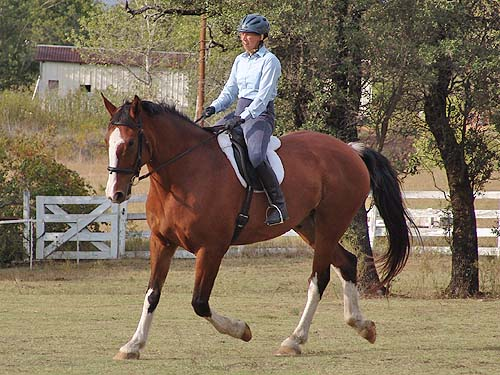

10/14/06
Schooling Kanuk
We've got flexing down now. I just have to watch that I don't soften too much.
He's bendy and relaxed. I need to work a bit more on forward at the walk, though.
He's easily capable of forward. It's just not always what he wants to do....
His trot starts out like his walk, not so forward.
We hadn't taken pictures in a while. It was lovely to see him be so consistent with his head.
I work for short periods of him being more up in front.
Not as up, but still soft.
I love when he starts working and you can see all the muscles.
I'm noticing that my legs tend to slip back.
He I was asking for more, but should have given more with my hands.
His friends kept popping out of the trees. He noticed to begin with, but settled into working.
Working on lengthening across the diagonal.
His leg yields are quite nice. Shoulder in is good, too.
His trot isn't jarring, like some of my other horses'.
And a little canter. I'm better with a grounds person telling me what to do here. I can get nervous at the canter.
And some trot stretch.
I need to keep my shoulders back for this, so I don't mess with his balance.

And coming around the corner to ask for a more forward trot.
And getting some more reach at the trot.
A rub of the crest to tell him he's a good boy.